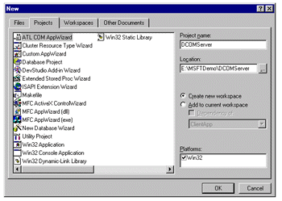
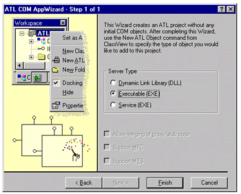
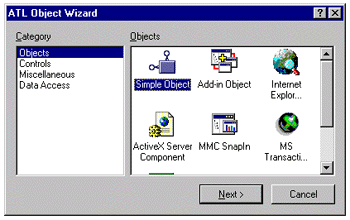
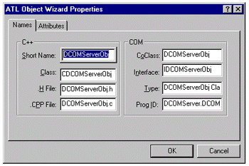
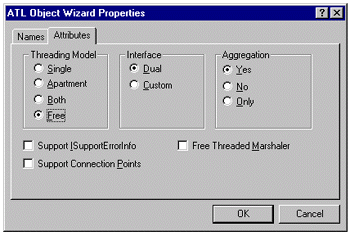
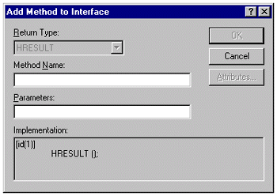
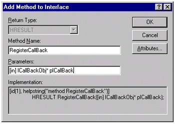
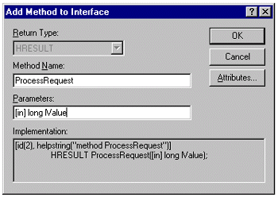

| ||||
Steve Robinson
Panther Software
The most popular COM threading model by far is the Single Threaded Apartment model. In the Single Threaded Apartment model, COM serializes calls so that you don't have to worry about protecting data a COM object's internal data and state against concurrent access on multiple threads. However, often times the Single Threaded Apartment model is not appropriate. Suppose you have calls coming into your DCOM server that, if serialized, would bog down your application. For example, suppose your DCOM server is used as a broker/gateway to a mainframe. One request to the mainframe may take several minutes to process, while another request to the mainframe may take milliseconds to process. In this scenario, serialized calls may not result in the optimal experience for the user. A much better solution would be to allow for non-blocking calls into a free threaded DCOM server and protect shared data with critical sections. This scenario would allow a pool of worker threads to process queue items.
Let's start by creating our DCOM server application. The first step is to create a new ATL COM AppWizard that is an executable, as shown in the two screen shots below:

Figure 1. Opening the ATL COM AppWizard

Figure 2. Selecting Executable
The Visual C++ project wizard creates a skeleton application for you. The default for the application is Apartment Threaded model, which we will change to Free Thread by defining _ATL_FREE_THREADED in stdafx.h and commenting out the line that defines _ATL_APARTMENT_THREADED as shown below:
//#define _ATL_APARTMENT_THREADED #define _ATL_FREE_THREADED
This is the first step for allowing our COM instances to be free threaded. The second step is actually adding a COM object to our application and marking it as multi-threaded. Again, we can utilize the Visual C++ wizard. On the menu, click Insert | New ATL Object, highlight Simple Object, and click the Next button as shown in the screen shot below:

Figure 3. The ATL Object Wizard
Add an object called DCOMServerObj by typing DCOMServerObj in the Short Name edit control as shown below, and click the Attributes tab.

Figure 4. Adding an object
On the Attributes tab, select threading model Free. The wizard will add an interface to the project's IDL file (DCOMServer.idl), generate the CDCOMServerObj class declaration (DCOMServerObj.h), and generate the CDCOMServerObj class implementation file (DCOMServerObj.cpp).

Figure 5. Selecting the threading model
Now it is time to add a couple methods to our immutable interface. If you open up the DCOMServer.idl file, you will see the interface declared but no methods in the interface. Click the ClassView tab in the lower left of the WorkSpace window, right-click the IDCOMServerObj tree item, and select Add Method to invoke the Add Method to Interface dialog box shown below.

Figure 6. The Add Method to Interface dialog box
The first thing you will notice is that the Return Type entry is grayed out. That is because all COM methods return HRESULTs. Following this procedure, add two methods:
When adding the methods, your typed input should look exactly like the input shown in the dialog boxes below:

Figure 7. Adding the first method

Figure 8. Adding the second method
Listed below is the complete IDL generated by the wizard.
import "oaidl.idl";
import "ocidl.idl";
[
object,
//This is interface ID.
uuid(87E47B03-5003-11D2-9193-006008A4FB73),
dual,
helpstring("IDCOMServerObj Interface"),
pointer_default(unique)
]
interface IDCOMServerObj : IDispatch
{
[id(1), helpstring("method RegisterCallBack")]
HRESULT RegisterCallBack([in]ICallBackObj* pICallBack);
[id(2), helpstring("method ProcessRequest")]
HRESULT ProcessRequest([in]long lValue);
};
[
uuid(87E47AF6-5003-11D2-9193-006008A4FB73),
version(1.0),
helpstring("DCOMServer 1.0 Type Library")
]
library DCOMSERVERLib
{
importlib("stdole32.tlb");
importlib("stdole2.tlb");
[
//This is your components CLSID
uuid(87E47B04-5003-11D2-9193-006008A4FB73),
helpstring("DCOMServerObj Class")
]
coclass DCOMServerObj
{
[default] interface IDCOMServerObj;
};
};
A quick perusal of the IDL code shows the interface and its methods. It also has a library section that generates the type library, which programs such as Visual Basic® will use for early binding. Within the library section is the coclass, which describes the supported interfaces in the component.
The first question you might be asking is how the IDL knows about the ICallBackObj interface declared in method 1. The answer is simple enough: ICallBackObj is a predefined interface that we can use repeatedly for different COM servers that wish to support callbacks. It is included in the GlobalIIncludes directory. We just provide the declaration of it in a manner similar manner to that for a C++ class. That is, we add the following line to our IDL file, as shown below, so it is included for the IDCOMServerObj interface declaration:
#include "..\GlobalIncludes\CallBackObj.idl"
At this point, it is a good idea to rebuild the complete project to make sure everything compiles and links.
Our next step is to consider what the interface methods will do. Method 1- - RegisterCallBack([in]ICallBackObj* pICallBack) -- is going to provide a mechanism to send results back to any client that desires to receive updates from the DCOM server. That is why it is called RegisterCallBack. Method 2 -- ProcessRequest([in]long lValue) -- is going to take a long value and place it on a queue for a worker thread. The worker thread will look for entries on the queue, process the data, and send results back to the client.
Accordingly, we need a central place to receive and store data as well as a central place that can find all registered callbacks. Note that by storing data on a queue and then having a worker thread process items from the queue, we are effectively creating asynchronous DCOM.
The question becomes: If all instances of COM objects are independent, how do we create a central place to receive and store data, especially if we just say no to singletons? The answer is easy. While every instance is independent, they all share the same main COM server module. Open up stdafx.h, and take a close look at the following snippet generated by the wizard:
//You may derive a class from CComModule and use it if you want
//to override something, but do not change the name of _Module
class CExeModule : public CComModule
{
public:
LONG Unlock();
DWORD dwThreadID;
HANDLE hEventShutdown;
void MonitorShutdown();
bool StartMonitor();
bool bActivity;
};
extern CExeModule _Module;
It is CComModule that implements a COM server module, allowing a client to access the module's components, and CComModule supports both DLL (in process) and EXE modules. Hence, anything contained in this class is shared by all COM object instances.
This is a much better solution than use of a singleton for shared data. Creating a singleton forces all instances to share the same data. This solution provides you with the flexibility to share some data items through the use of a CcomModule-derived class, while allowing your COM instances to maintain their own distinct values.
A complete look at the stdafx.h shipped with the article shows a CExeModule using class CCommonDataManager -- which, appropriately named, is shared by all COM instances because it is a member of CExeModule.
// stdafx.h : include file for standard system include files,
// or project specific include files that are used frequently,
// but are changed infrequently
#if !defined
(AFX_STDAFX_H__87E47AF9_5003_11D2_9193_006008A4FB73__INCLUDED_)
#define AFX_STDAFX_H__87E47AF9_5003_11D2_9193_006008A4FB73__INCLUDED_
#if _MSC_VER > 1000
#pragma once
#endif // _MSC_VER > 1000
#define STRICT
#ifndef _WIN32_WINNT
#define _WIN32_WINNT 0x0400
#endif
//#define _ATL_APARTMENT_THREADED
#define _ATL_FREE_THREADED
#include <atlbase.h>
class CCommonDataManager;
//You may derive a class from CComModule and use it if you want
//to override something, but do not change the name of _Module
class CExeModule : public CComModule
{
public:
//3) Add constructor, destructor and CommonDataManager
CExeModule();
virtual ~CExeModule();
CCommonDataManager* m_pCommonDataManager;
LONG Unlock();
DWORD dwThreadID;
HANDLE hEventShutdown;
void MonitorShutdown();
bool StartMonitor();
bool bActivity;
};
extern CExeModule _Module;
#include <atlcom.h>
//{{AFX_INSERT_LOCATION}}
// Microsoft Visual C++ will insert additional declarations
// immediately before the previous line.
#endif // !defined
(AFX_STDAFX_H__87E47AF9_5003_11D2_9193_006008A4FB73__INCLUDED)
Notice that we added a constructor and a virtual destructor to the class declaration. The implementations of the constructor and destructor are in DCOMServer.cpp and are shown below:
#include "CommonDataManager.h"
//-------------------------------------------------------------------
CExeModule::CExeModule()
{
m_pCommonDataManager = new CCommonDataManager();
}
//-------------------------------------------------------------------
CExeModule::~CExeModule()
{
if(NULL != m_pCommonDataManager)
{
delete m_pCommonDataManager;
m_pCommonDataManager = NULL;
}
}
Recall from above that m_pCommonDataManager is a public member of our CExeModule, and that CExeModule is derived from CComModule. Therefore, any of the COM instances can make calls to m_pCommonDataManager through the CExeModule class by calling _Module.m_pCommonDataManager->[public method of CCommonDataManager].
CCommonDataManager has three public methods for our COM instances. They are shown below, complete with their implementation:
//-------------------------------------------------------------------
bool CCommonDataManager::RegisterClientCallBack
(
CDCOMServerObj* pDCOMServerObj,
ICallBackObj* pICallBackObj //call back in client
)
{
/*
We are passed an instance of a COM object that is owned by a client
along with a call back interface. Let's add it to our array.
*/
if(pDCOMServerObj == NULL || pICallBackObj == NULL)
return false;
bool bSuccess = false;
//The constructor of CDCOMServerArrayElement calls AddRef()
//on the ICallBackObj interface
//when it uses the assignment operator to set a class member.
CDCOMServerArrayElement* pDCOMServerArrayElement
= new CDCOMServerArrayElement(pDCOMServerObj, pICallBackObj);
if(pDCOMServerArrayElement == NULL)
return false;
::EnterCriticalSection(&m_CommonDataManagerCriticalSection);
m_DCOMServerArray.push_back(pDCOMServerArrayElement);
::LeaveCriticalSection(&m_CommonDataManagerCriticalSection);
return true;
}
RegisterClientCallBack takes the instance of the COM object and the ICallBackObj. A CDCOMServerArrayElement is created, which increments the reference count on the ICallBackObj, since the ICallBackObj is kept in the array beyond the scope of this function. Once the CDCOMServerArrayElement is created, it is added to the member array.
//-------------------------------------------------------------------
void CCommonDataManager::DataManagerAddEntry
(
long lValue,
CDCOMServerObj* pDCOMServerObj
)
{
//make sure thread is started.
//This is called only once since there is only one
//instance of CCommonDataManager.
if(!m_bThreadStarted)
{
m_bThreadStarted = m_pDataQueue->StartQueue();
}
_ASSERTE(m_pDataQueue != NULL);
//add value to the queue passing the DCOMServerObj so we know
//to whom to send it back to
m_pDataQueue->AddEntry(lValue, pDCOMServerObj);
}
DataManagerAddEntry takes a value passed in and adds it to a queue. The worker thread will eventually pick up items from the queue.
void UnregisterClientCallBacks(CDCOMServerObj* pDCOMServerObj);
//-------------------------------------------------------------------
void CCommonDataManager::UnregisterClientCallBacks
(
CDCOMServerObj* pDCOMServerObj
)
{
/*
First tell the worker thread to remove all requests
from this COM instance.
*/
m_pDataQueue->RemoveRequestsForThisDCOMServerObj(pDCOMServerObj);
/*
Next we need to find all call back interfaces registered to this
client and release them by deleting the array element
(which calls Release() in its destructor). The pDCOMServerObj
can be in the array multiple times
so we need to check for all occurrences.
*/
::EnterCriticalSection(&m_CommonDataManagerCriticalSection);
CDCOMServerArrayElement* pDCOMServerArrayElement = NULL;
int iTotal = m_DCOMServerArray.size();
for(int i = 0; i < iTotal; i++)
{
pDCOMServerArrayElement = m_DCOMServerArray.at(i);
if(pDCOMServerArrayElement &&
pDCOMServerArrayElement->m_pDCOMServerObj == pDCOMServerObj)
{
//delete and remove from array,
//delete of pDCOMServerArrayElement
//calls Release of the ICallBackObj
delete pDCOMServerArrayElement;
pDCOMServerArrayElement = NULL;
m_DCOMServerArray.erase(&m_DCOMServerArray.at(i));
i--;
iTotal--;
}
}
::LeaveCriticalSection(&m_CommonDataManagerCriticalSection);
}
UnregisterClientCallBacks takes the instance of the COM object that is about to be destroyed, removes it from the array, and calls release on the ICallBackObj object associated with it in the array.
Now it is time to examine DCOMServerObj.h. We placed all the implementation of DCOMServerObj.cpp in DCOMServerObj.h to make it easier to follow.
#ifndef __DCOMSERVEROBJ_H_
#define __DCOMSERVEROBJ_H_
#include "resource.h" // main symbols
#include "CommonDataManager.h"
// CDCOMServerObj
class ATL_NO_VTABLE CDCOMServerObj :
public CComObjectRootEx<CComMultiThreadModel>,
public CComCoClass<CDCOMServerObj, &CLSID_DCOMServerObj>,
public IDispatchImpl<IDCOMServerObj, &IID_IDCOMServerObj,
&LIBID_DCOMSERVERLib>
{
public:
CDCOMServerObj(){}
void FinalRelease()
{
_Module.m_pCommonDataManager->UnregisterClientCallBacks(this);
}
DECLARE_REGISTRY_RESOURCEID(IDR_DCOMSERVEROBJ)
DECLARE_PROTECT_FINAL_CONSTRUCT()
BEGIN_COM_MAP(CDCOMServerObj)
COM_INTERFACE_ENTRY(IDCOMServerObj)
COM_INTERFACE_ENTRY(IDispatch)
END_COM_MAP()
public:
STDMETHOD (RegisterCallBack) (ICallBackObj* pICallBack)
{
if(NULL != pICallBack)
{
bool bSuccess = _Module.m_pCommonDataManager->
RegisterClientCallBack(this,
pICallBack);
if(bSuccess)
return S_OK;
else
return E_FAIL;
}
return E_INVALIDARG;
}
STDMETHOD (ProcessRequest) (long lValue)
{
_Module.m_pCommonDataManager->DataManagerAddEntry(lValue, this);
return S_OK;
}
}; //end class declaration
#endif //__DCOMSERVEROBJ_H_
The first method to examine is RegisterCallBack. This method is called from the client, which is required to pass an instance of an ICallBackObj. The instance of ICallBackObj and "this" is passed to CCommonDataManager, which puts the two into an array element and adds them to an array for maintaining knowledge of running COM instances and call backs that the client wishes to register.
The second method to review is ProcessRequest, which takes a long value. The CCommonDataManager checks to ensure the worker thread is started, and adds the long value to a queue for the worker thread to process.
When the worker thread finds long values on the queue, it calls another public method of CCommonDataManager: SendDataToServer(long lValue). CCommonDataManager ::SendDataToServer iterates through all the array elements and calls the ICallBackObj::ReceiveDataFromServer.
The final method to examine in DCOMServerObj.cpp is FinalRelease(). Since CCommonDataManager not only holds pointers to CDCOMServerObjs and COM instances of type ICallBackObj, when is it appropriate to remove the CDCOMServerObj from the array and Release the ICallBackObj? Since DCOMServerObj does not suggest nor require the client to call a method to unregister, we use CComObjectRootEx::FinalRelease, which is called by the ATL framework when the object is being destroyed. Consequently, since we know that the CDCOMServerObj is about to be destroyed, this is an appropriate time to remove associated array entries.
A complete review of the worker thread is left as an exercise to the reader.
Did you find this material useful? Gripes? Compliments? Suggestions for other articles? Write us!
© 1999 Microsoft Corporation. All rights reserved. Terms of use.